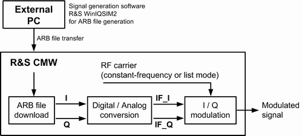

In arbitrary (ARB) baseband mode, the R&S CMW uses an ARB waveform file (*.wv) to obtain the digital IQ data of the baseband signal.
An ARB generator is required for the ARB baseband mode. An R&S CMW100 always contains an ARB generator. For the R&S CMW500/2xx, the ARB generator is optional (R&S CMW-B110x or MUA R&S CMW-B100H).
- Signals in accordance with various digital network standards
- Customized RF signals with various modulation schemes
- Composite signals defined by multi-segment waveform files that you can alternate without delay due to loading
In the standalone scenario, the GPRF generator converts the digital IQ samples to analog I and Q (baseband) signals. They are then modulated onto the RF carrier and fed to the selected RF connector:

In the "IQ Out" scenario, the digital IQ samples are fed to the selected digital IQ out at a configurable rate.
Combining list mode and ARB baseband mode In standalone scenario, it is possible to combine ARB baseband mode and list mode, which opens up many options. Note in particular that you can:
See also "ARB Baseband Mode". |
Multi-segment waveform files contain several waveforms with individual length which can pertain to different standards. The clock rates of all segments must be equal. The length of the entire file (no. of samples) is equal to the sum of all segments.
Multi-segment waveform files are used to alternate between different waveforms without delay due to loading. It is also possible to combine several waveform files into one bigger multi-segment file to utilize the memory size of the R&S CMW. A maximum file size of 1024 MB for waveform files is supported. The "Segment Trigger" switches between the different segments.